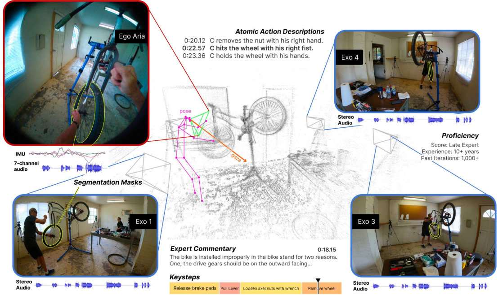

|
Arjun Somayazulu I'm a second-year Ph.D. student at UT Austin advised by Prof. Kristen Grauman. I'm broadly interested in Computer Vision and multi-modal learning, and my current line of research is in Audio-Visual learning. Previously, I received a B.S in Computer Science and Biomedical Engineering degree from Johns Hopkins University, where I was advised by Prof. Archana Venkataraman. |

|
Papers |
|

|
Self-Supervised Visual Acoustic Matching
Kristen Grauman, Arjun Somayazulu, ArXiv 2023 |

|
Self-Supervised Visual Acoustic Matching
Arjun Somayazulu, Changan Chen, Kristen Grauman, NeurIPS, 2023 project | paper |

|
A Comparative Study of Data Augmentation Techniques for Deep Learning Based Emotion Recognition
Ravi Shankar, Abdouh Harouna, Arjun Somayazulu, Archana Venkataraman, ArXiv paper |
Teaching |